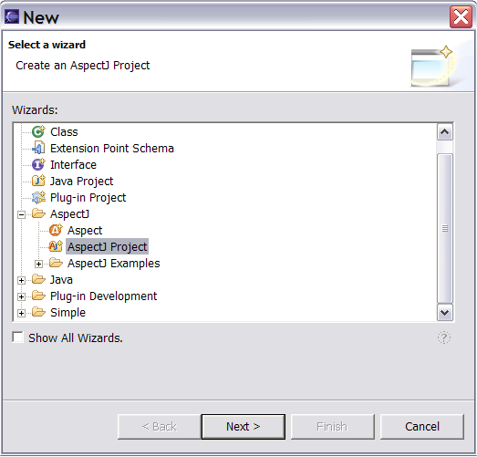
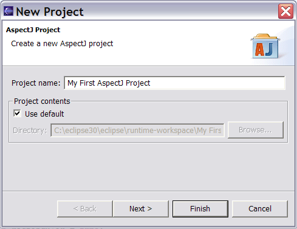
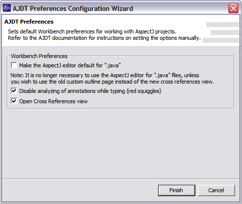

Copyright © 2004 Eclipse.org.
All Rights Reserved
From the
File menu select new… . If “AspectJ project” appears
in the list, select it.
If it
doesn’t, this is probably the first time you’ve used the plugin
– select “Other” and then “AspectJ” and “AspectJ project.”

The new
project wizard appears:

This wizard
has identical behaviour to the new Java project wizard (except of course that
it creates a project with the AspectJ nature).
When you
click “Finish” on the new project wizard, your project will be created. If this
is the first time you’ve used AJDT, you will see the following dialog pop-up:

This dialog
configures some Eclipse settings that will make your life much easier when
working with AspectJ projects. Leave everything as it is and click
“Finish.”
From the
Package Explorer view, select your project and right-click to bring up the
context menu. Select “Convert to AspectJ Project.” If
you later want to restore the project to its former settings, select “Remove
AspectJ Nature” from the context menu. If this is the first time you’ve used
AJDT, you’ll see the preferences configuration wizard as above.